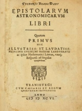
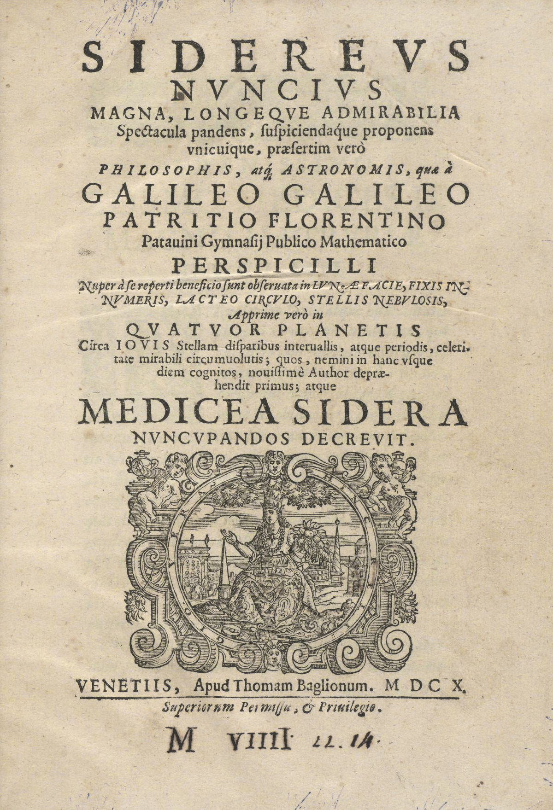
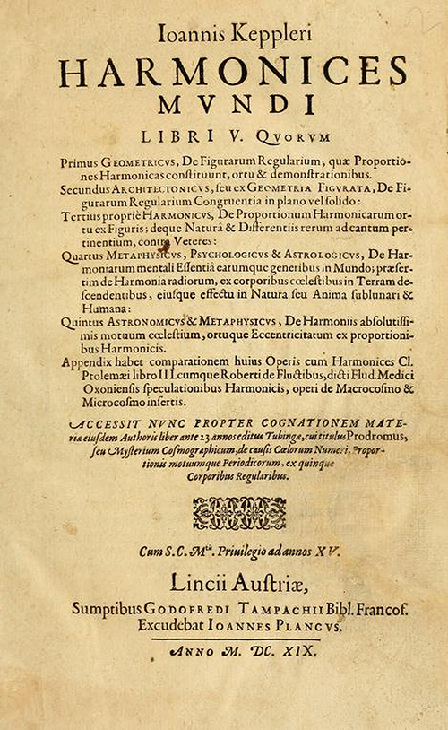
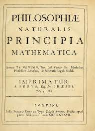
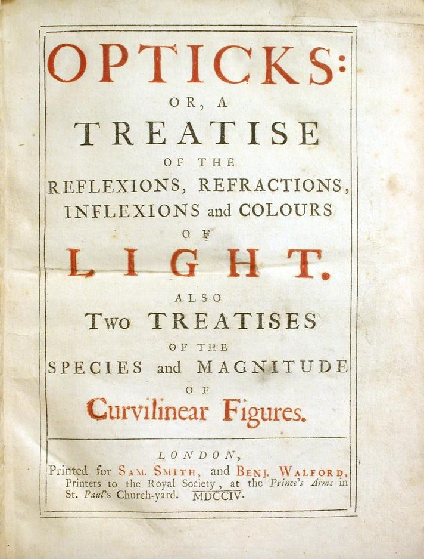

Galileo Galilei, il "padre della scienza moderna", rivoluzionò l'astronomia sostenendo il sistema eliocentrico e gettò le basi della meccanica classica, sfidando le credenze tradizionali e scontrandosi con la Chiesa cattolica.
Johannes Kepler, fondatore dell'astronomia moderna, rivoluzionò la comprensione del moto planetario formulando le leggi che portano il suo nome. Le sue scoperte confermarono il sistema eliocentrico.
Johannes Kepler pubblica
Galileo Galilei pubblica
Johannes Kepler pubblica
Isaac Newton fu un geniale scienziato e matematico inglese, celebre per le leggi del moto, la legge di gravitazione universale e il calcolo infinitesimale. Ha anche condotto ricerche pionieristiche sull'ottica.
Isaac Newton pubblica
Isaac Newton pubblica
